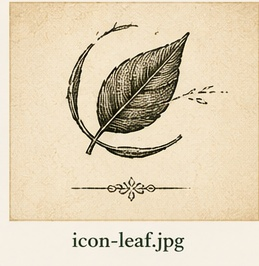
Cat Safe
Secure, escape-resistant design.
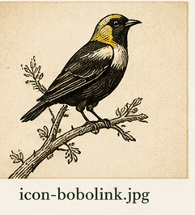
Bobolink Construction LLC Custom Catios & Feline Enrichment Environments Phone (541) 357-6791Custom Catios & Feline Enrichment Environments
Beautiful, secure outdoor spaces designed to give indoor cats fresh air, sunshine, climbing, exploration, and the stimulation they naturally crave.
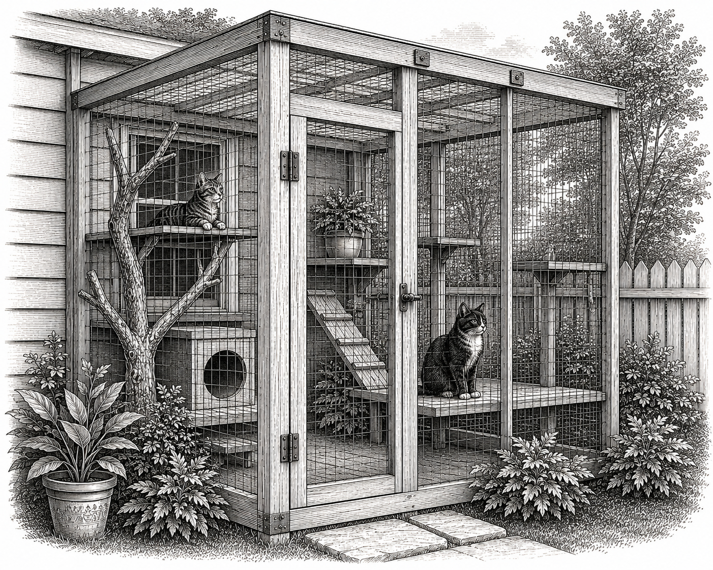

Secure, escape-resistant design.
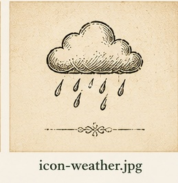
Built for Oregon conditions.
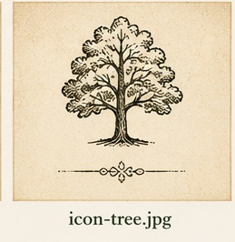
Made to complement your home.
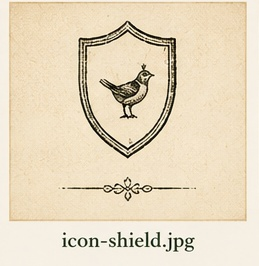
Bonded for your peace of mind.
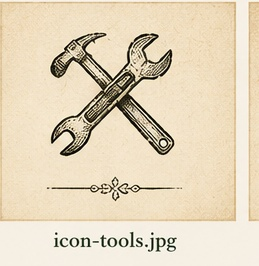
Licensed • Bonded • Insured
Outdoor Feline Conservatories
Every build is custom designed to enrich your cat’s natural instincts and complement your home. From a small window catio to a walk-in garden enclosure, the goal is the same: safer outdoor access and a more stimulating daily life.
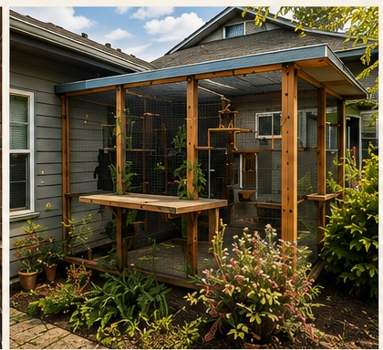
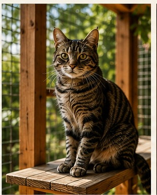
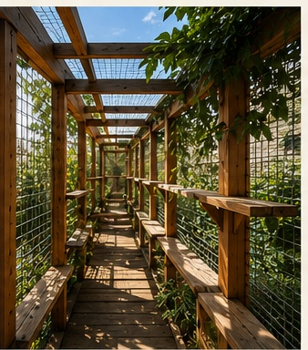
Also Building
In addition to custom catios, Bobolink Construction LLC offers practical, detail-focused carpentry and fencing services for homeowners in Eugene and the surrounding area.
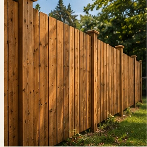
No. 101
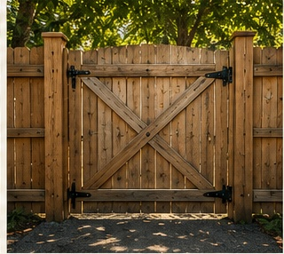
No. 102
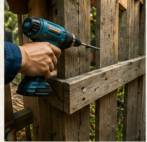
No. 103
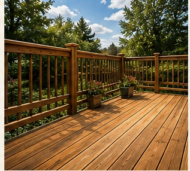
No. 104
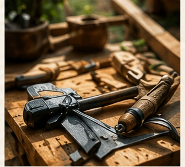
No. 105
Our Simple Process
Tell us about your cats, your space, and what you want to build.
We evaluate your space and talk through practical options.
Custom solutions tailored to your home, yard, and cats.
Clear, detailed pricing with no pressure.
Skilled craftsmanship with attention to every detail.
A safe, enriching space your cats will love.
Bobolink Construction LLC is locally owned and operated in Eugene, Oregon. We combine a love of cats with quality craftsmanship to build beautiful, safe, enriching environments that bring nature into their world.
Eugene • Springfield • Junction City • Creswell • Veneta • Cottage Grove and surrounding areas.
277 W. 8th Ave
Eugene, OR 97401
CCB #262326
Licensed • Bonded • Insured